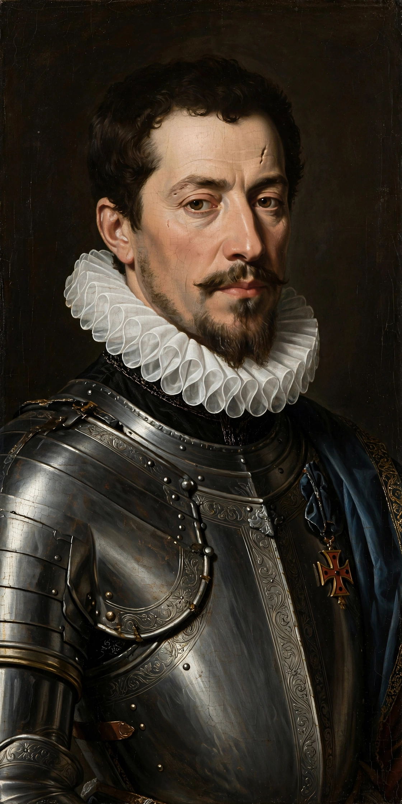

Alexander Farnese, Duke of Parma
Alexander Farnese (Italian: Alessandro Farnese; 27 August 1545 – 3 December 1592) was an Italian noble and condottiero, Duke of Parma, Piacenza and Castro from 1586, and Governor of the Spanish Netherlands from 1578 until his death. Regarded as one of the finest commanders of his age, he reconquered much of the southern Netherlands for Philip II of Spain during the Eighty Years' War, most famously at the Siege of Antwerp (1584–85).

| Alexander Farnese | |
|---|---|
| Born | 27 August 1545, Rome, Papal States |
| Died | 3 December 1592 (aged 47), Arras, Spanish Netherlands |
| Parents | Ottavio Farnese, Duke of Parma; Margaret of Parma |
| Service | Governor of the Spanish Netherlands (1578–1592) |
| Battles | Lepanto (1571); Gembloux (1578); Maastricht (1579); Antwerp (1584–85) |
Career
The son of Margaret of Parma — herself a former governor of the Netherlands — and great-grandson of Pope Paul III, Farnese was raised at the Spanish court as a hostage-companion of the future Philip II and Don John of Austria, alongside whom he fought at the Battle of Lepanto (1571). Appointed governor-general after Don John's death in 1578, he combined military skill with diplomacy, winning back the Catholic Walloon provinces through the Union of Arras (1579) and then reducing the great cities of Flanders and Brabant one by one.
His masterpiece was the siege of Antwerp, where he sealed the Scheldt with a great fortified bridge of boats. In 1590 and 1591 Philip ordered him to intervene in the French Wars of Religion in support of the Catholic League, relieving Paris and Rouen; he died at Arras in December 1592 from wounds and illness. His campaigns fixed the division between the Spanish (later Austrian) south and the independent Dutch Republic that lasted into the modern Belgium–Netherlands border.
Categories: 1545 births · 1592 deaths · Dukes of Parma · Spanish generals